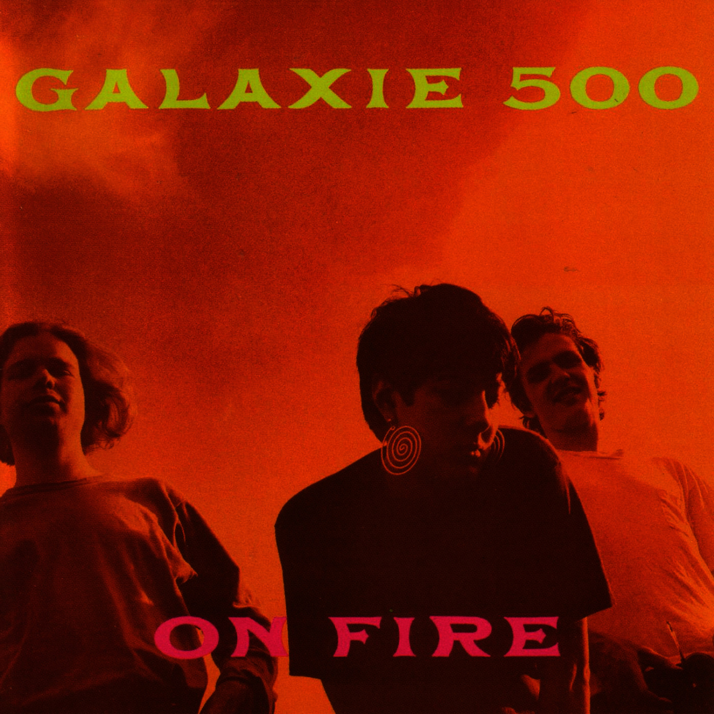
01Ceremony
Galaxie 500 – On Fire (1989)
orig. Joy Division
 02
02
So Sad
Dillard & Clark – Through The Morning, Through The Night (1969)
orig. Everly Brothers
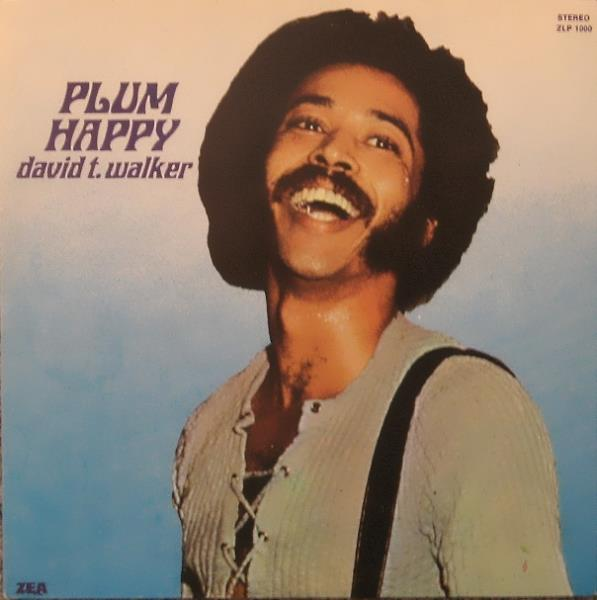
03Lay Lady Lay
David T. Walker – Plum Happy (1971)
orig. Bob Dylan
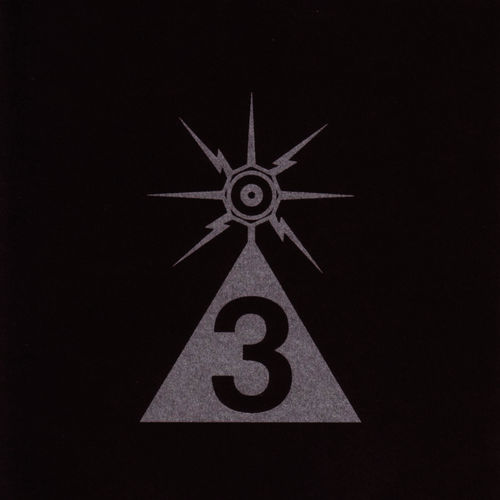
04Lord, Can You Hear Me?
Low – A Tribute To Spacemen 3 (2006)
orig. Spaceman 3
 05
05
Atmosphere
Codeine – When I See the Sun (2012)
orig. Joy Division
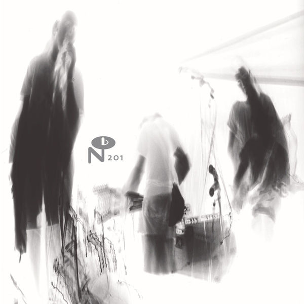
06Ghost Train
Summer Camp – Young EP (2010)
orig. The Flamingos
 07
07
My Girls
Becca Stevens – Weightless (2011)
orig. Animal Collective
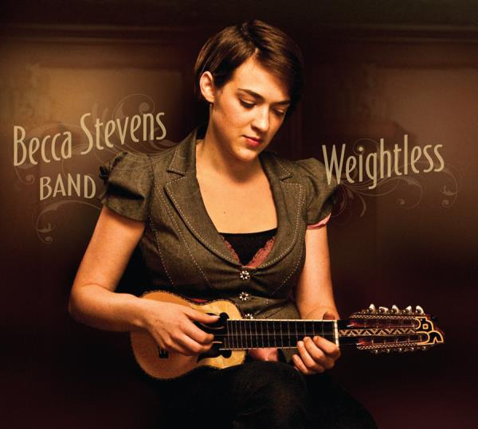
08Live In Dreams
High Highs (2010)
orig. Wild Nothing Cover
 09
09
The Breeze / My Baby Cries
Bill Callahan – Loving Takes This Course - a Tribute to the Songs of Kath Bloom (2009)
orig. Kath Bloom
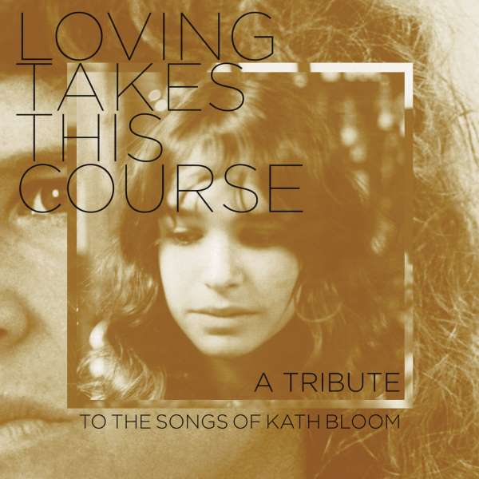
10this love is fucking right!
The Bilinda Butchers – beko_14 (2009)
orig. popbah
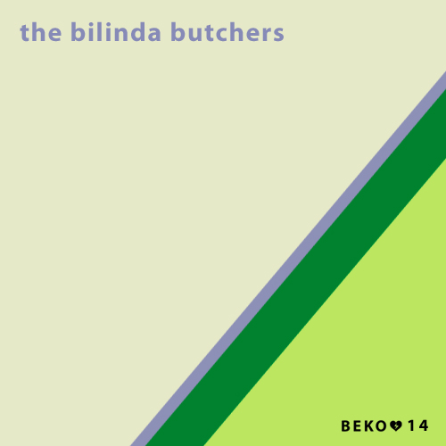
11Goodbye To Love
American Music Club – If I Were A Carpenter (1994)
orig. The Carpenters
 12
12
Plain As Your Eyes Can See
Acetone – Light in the Attic & Friends (2023)
orig. Jim Sullivan
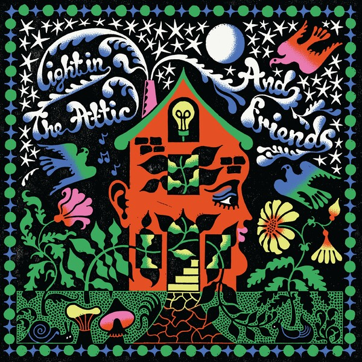
13How Could You Let Me Go
Vashti Bunyan; Devendra Banhart – Light in the Attic & Friends (2023)
orig. Lynn Castle
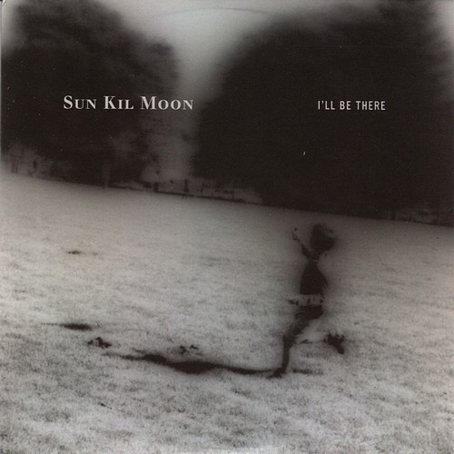
14Natural Light
Sun Kil Moon – I'll Be There (2010)
orig. Casiotone For The Painfully Alone
 15
15
Bachelor Kisses
The Radio Dept. – Bachelor Kisses (2007)
orig. The Go-Betweens
 16
16
Computer Love
Glass Candy – B/E/A/T/B/O/X (2007)
orig. Kraftwerk
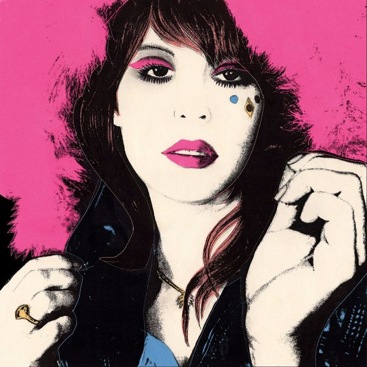
17Are You Gonna Look After My Boys
Waskerley Way – Pinglewood's Ariel Pink Special - Soundtrack EP (2010)
orig. Ariel Pink's Haunted Graffiti
 18
18
You've Lost That Lovin' Feelin'
Phosphorescent – Live (2006)
orig. Righteous Brothers
 19
19
Rainy Days And Mondays
Cracker – If I Were A Carpenter (1994)
orig. The Carpenters
 20
20
Half A Person
The Welcome Wagon – Welcome To The Welcome Wagon (2008)
orig. The Smiths
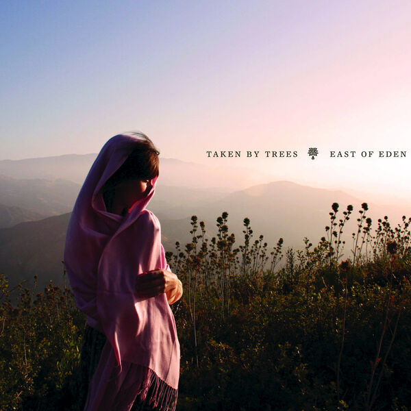
21My Boys
Taken By Trees – East of Eden (2009)
orig. Animal Collective
 22
22
Planet Caravan
Brownout – Brownout Presents Brown Sabbath (2014)
orig. Black Sabbath
 23
23
Boy From School
Grizzly Bear – B-Sides & Demos (2010)
orig. Hot Chip
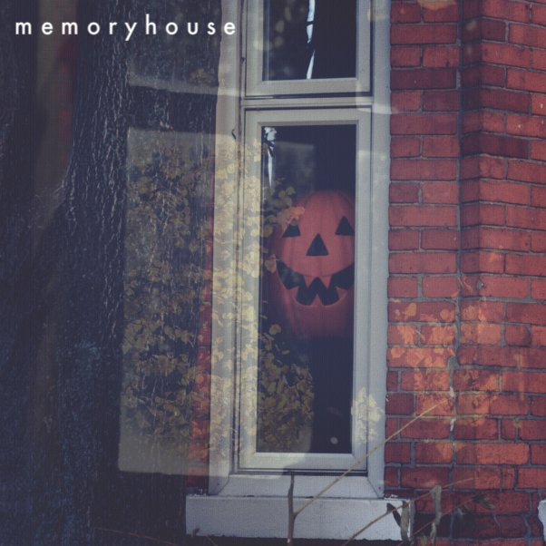
24Foreground
Memoryhouse – Foreground (2010)
orig. Grizzly Bear
 25
25
Mr. Bojangles
Nina Simone – Here Comes The Sun (2012)
orig. Jerry Jeff Walker
 26
26
First Of The Gang To Die
Zee Avi – Zee Avi (2009)
orig. The Smiths
 27
27
Ain't No Sunshine When She's Gone
Idiot Glee – Let's Get Down Together (2011)
orig. Bill Withers
 28
28
More Than This
Division Day – Covers/Remixes (2008)
orig. Roxy Music
 29
29
Another One Goes By
The Walkmen – A hundred miles off (2006)
orig. Mazarin
 30
30
Straight Up
Luna – Guilt By Association (2007)
orig. Paula Abdul
 31
31
Cet Air-La
April March – Chick Habit (1995)
orig. France Gall
 32
32
The Wolves (Act I and II)
Ellie Goulding – Internet Single (2009)
orig. Bon Iver
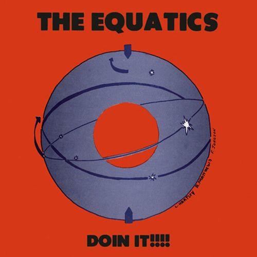
33Ain't No Sunshine When She's Gone
The Equatics – Doin It!!!! (1972)
orig. Bill Withers
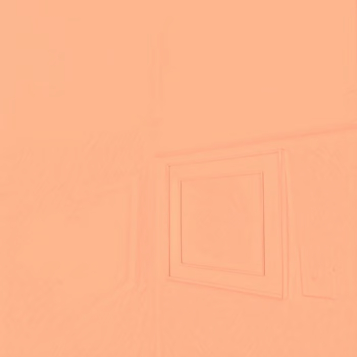
34Sunny
Montefiori Cocktail – Raccolta Nº2 (2002)
orig. Bobby Hebb
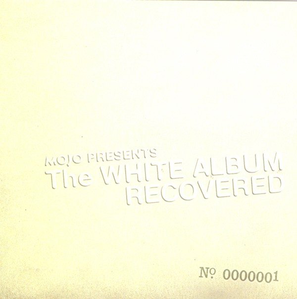
35Martha My Dear
Vashti Bunyan & Max Richter – Mojo Presents The White Album Recovered No. 0000001 (2008)
orig. The Beatles
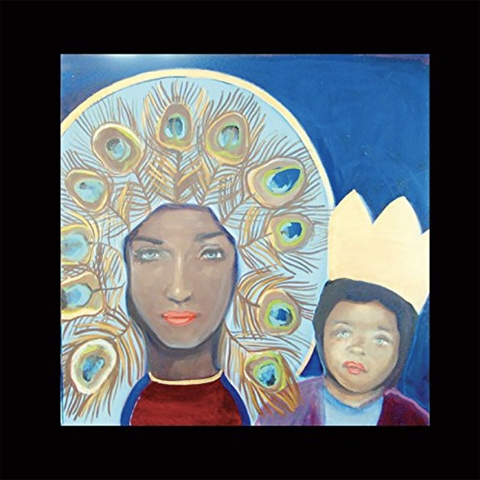
36Borderline
The Chapin Sisters – Through the Wilderness: A Tribute to Madonna (2007)
orig. Madonna
 37
37
Two Weeks
Ruby Weapon – c o v e r r s (2007-2015) (2020)
orig. Grizzly Bear
 38
38
Who Doesn't Love (Sugar, Sugar) (orig. The Archies)
Sinn Sisamouth – Cambodian Rocks Volumes 1- 4 (Remastered) (2016)